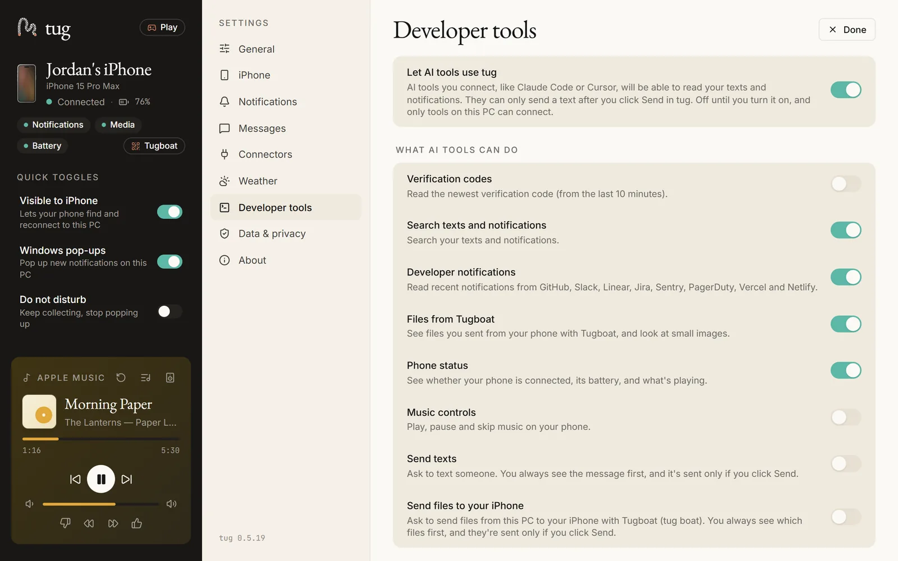
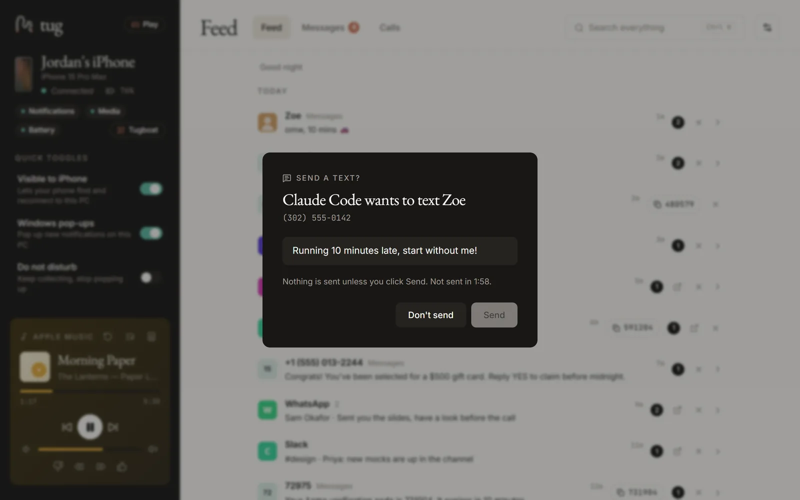

Developers
Your phone, in your AI tools.
tug's local MCP server and the tug command hand your coding tools the newest 2FA code, a search of your texts and notifications, CI and deploy notifications, a phone screenshot sent with Tugboat, and what's playing. Texts and files go out only when you click Send.
Works with Claude Code, Codex, Cursor and VS Code. The full reference is docs/DEVELOPERS.md.
Quickstart
- In tug, turn on Settings › Developer tools › Let AI tools use tug. It's off until you do.
- Add tug to your AI tool. Settings › Developer tools shows each snippet with your real path filled in and a Copy button. tug installs per user, so the command is normally at
%LOCALAPPDATA%\tug\bin\tug.exe. - Restart the AI tool, and ask it for your latest verification code, or what CI just told you.
Claude Code
claude mcp add --scope user tug -- "C:\Users\<you>\AppData\Local\tug\bin\tug.exe" mcpCodex, in ~/.codex/config.toml
[mcp_servers.tug]
command = 'C:\Users\<you>\AppData\Local\tug\bin\tug.exe'
args = ["mcp"]Cursor, in ~/.cursor/mcp.json
{
"mcpServers": {
"tug": { "command": "C:\\Users\\<you>\\AppData\\Local\\tug\\bin\\tug.exe", "args": ["mcp"] }
}
}VS Code, in mcp.json (MCP: Open User Configuration)
{
"servers": {
"tug": { "type": "stdio", "command": "C:\\Users\\<you>\\AppData\\Local\\tug\\bin\\tug.exe", "args": ["mcp"] }
}
}ChatGPT's desktop app can't use tug yet: it only connects to MCP servers on the internet, not local ones.

What AI tools can do
| Tool | What it does | Starts |
|---|---|---|
get_latest_code | The newest verification code from the last 10 minutes | Off |
search_messages | Search your texts and notifications | On |
recent_dev_notifications | Notifications from GitHub, Slack, Linear, Jira, Sentry, PagerDuty, Vercel and Netlify | On |
list_tugboat_files, get_tugboat_file | Files you sent from the phone with Tugboat; small images come back as images | On |
phone_status | Connected or not, model, battery, what's playing | On |
media_control | Play, pause, next, previous | Off |
send_text | Asks to send a text; tug shows a card and sends only if you click Send | Off |
send_file_to_phone | Asks to send files to your iPhone with Tugboat, after your click | Off |
The tug command
The same switches apply in your terminal. Settings › Developer tools › Add tug to PATH puts it in new terminals for your account only.
tug code --copy the newest code, also on the clipboard (kept out of history)
tug boat report.pdf send a file to your iPhone with Tugboat: tug asks you first
git diff | tug boat - --name changes.diff
tug text Sam "On my way" text someone: tug asks you first
tug status is tug running, the phone, what's switched on
tug mcp the MCP server (your AI tool starts this)Every send is yours to confirm

- Nothing is sent unless you click Send within 2 minutes. Focus starts on Don't send, and Esc means Don't send.
- Send stays disabled for a moment after the card appears, and whenever tug isn't in front, so a stray click or Enter can't land on it.
- For files, the card lists each file's name, size and folder, so you can see it's that
notes.txt. - Local only. A Windows named pipe that only your account can open; no network port.
- Other people's words are data. Texts and notifications come back marked as untrusted, so a message saying "ignore your instructions" is reported, not obeyed.
- Rate limits on every tool, and tug's log records which tool was used, never what it read.